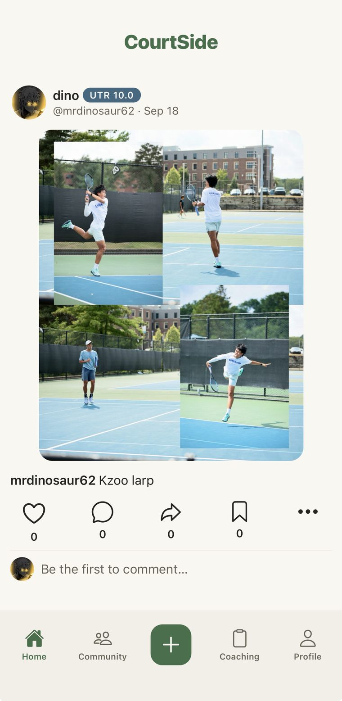
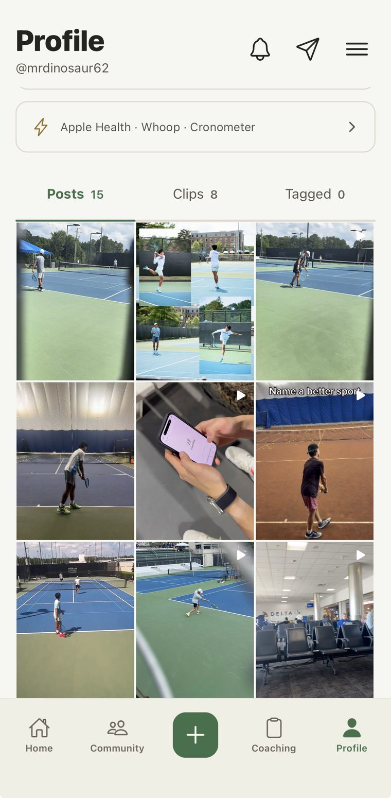
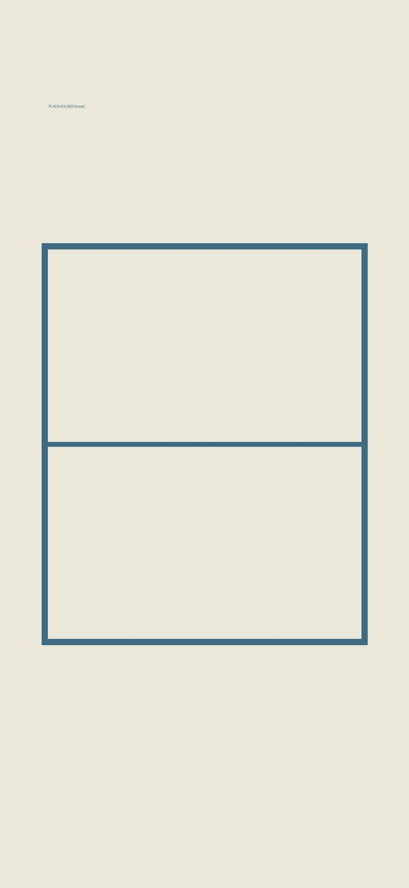
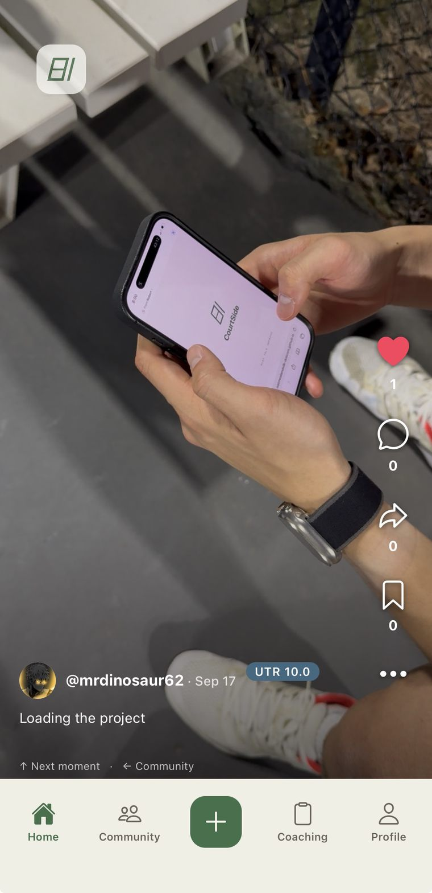
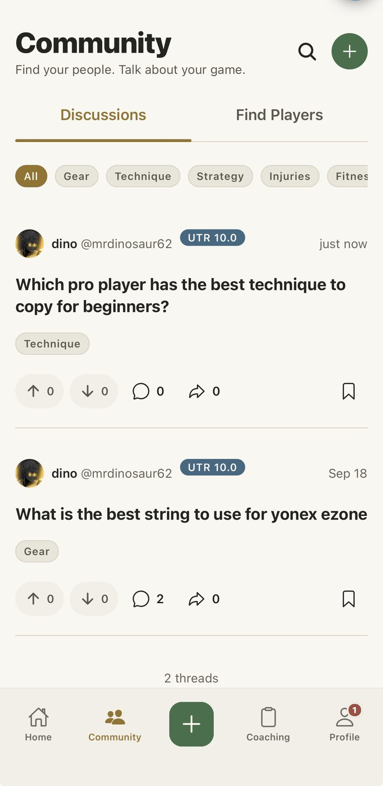

Players near you
A map of the courts around you and the players on them. Find people at your level, see who’s open to hit today, and ask to hit.
Part Instagram, part Reddit, all tennis. Post your clips, discuss hot takes, find people to hit with, and ask real coaches about your game.
Get the iPhone app
In the app, type under “Invited by?”
Free. Opens Apple’s TestFlight: install it, then CourtSide. On Android? Use CourtSide on the web.

Four things, all built around tennis instead of squeezed into an app made for everything else.
A map of the courts around you and the players on them. Find people at your level, see who’s open to hit today, and ask to hit.
Ask about your serve, your strings or your next tournament, and get answers from players who have been there. Then chat with your hitting partners, one to one or as a group.
Full-screen clips and posts from other players, one at a time. Every clip carries the player’s level, so you can read it properly instead of just watching it.
Real coaches, approved one by one. Ask them about your game on the board, or message them directly.
Real screens from the iPhone app, captured on a phone from our own account.




We’re building it in the open, one set at a time — five sets, like a major final. Four are in the books.
Accounts, navigation, and four court looks: Melbourne, Paris, London and New York.
The feed, profiles, likes, follows and the community board.
A real database, direct messages, blocking, reporting and moderation.
Approved coaches, coach pages, and real answers about your game.
The iPhone app is open to everyone through TestFlight. The App Store is next.
Tap “Get the iPhone app” at the top. It opens TestFlight, Apple’s app for trying apps before they’re in the App Store. Install that, then CourtSide.
Yes. The app is free, and so is asking a coach for now. If paid lessons with coaches come later, you’ll always see the price before you book. Everything else — the feed, the board, messages — stays free.
The iPhone app is out now through TestFlight. There’s also a version you can open in any browser right now at app.courtsidebase.com. Android comes after iPhone.
No. Every clip and post carries the player’s level, so a 3.0 rally gets read as a 3.0 rally instead of being measured against someone who’s been playing for twenty years.
Only if you give us your email: the link to the iPhone app, and the occasional note when something big ships. That’s it — no daily anything. One click unsubscribes, and you can ask us to delete your email whenever you like.
A very small team, in the open. The scoreboard above is the honest version of where things stand — it gets updated as sets get won, not as they get planned. Follow along on Instagram at @courtsidebase and @robertzchen.
Bugs, confusing screens, things you wish it did. We read every one of these ourselves.